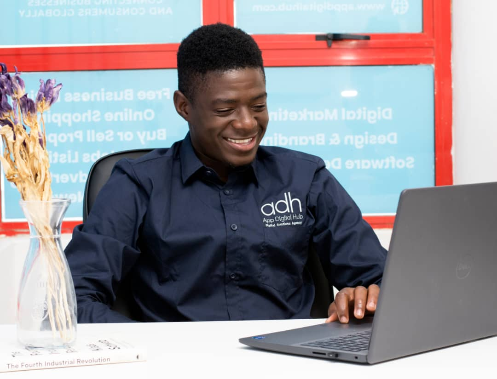
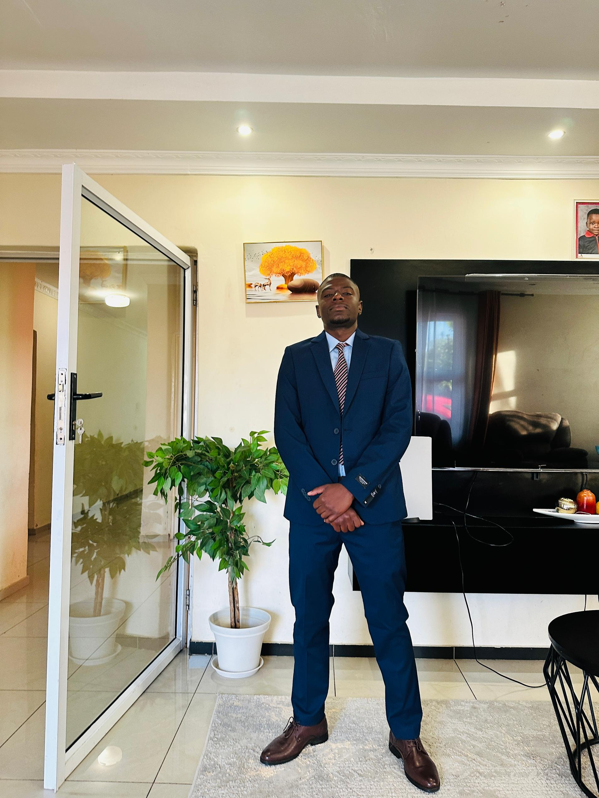

Understand the problem
Define the decision that needs better evidence.
Data analysis & software development
I turn business data into clear reports and working software. My projects show both the problem and the practical response.
Explore projects
Your portrait goes here
About photo placeholderAbout me
I am a Business Intelligence and Data Analytics graduate from Botswana Accountancy College. I work across analysis and development: understanding a business problem, building a report people can read, then making a tool that helps them act on it.
At DoBiz Africa I build web tools and comparison platforms.
Selected work
Choose a project below. Each overview connects the business problem, report and working software.
What I do
Define the decision that needs better evidence.
Make patterns and risks clear to the people who need them.
Create a usable tool that supports the next action.
Background
Comparison platforms, dashboards and web tools.
Data analysis and reporting internship.
Botswana Accountancy College / University of Sunderland.
Get in touch
Based in Francistown, Botswana. Open to data, BI and development opportunities.